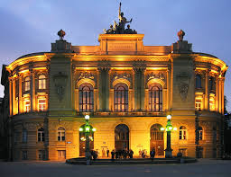

Polşa, beynəlxalq tələbələrə sərfəli qiymətə Avropa İttifaqı standartlarında təhsil və Şengen vizası ilə sərbəst səyahət imkanı verir.
Polşanın ən böyük və ən prestijli universitetidir. Çoxsaylı ingilis dilli proqramlara sahibdir.
Avropanın ən qədim universitetlərindən biridir (Nikolay Kopernik burada oxuyub).

Mühəndislik, arxitektura və İT sahələrində Polşanın və Şərqi Avropanın ən güclü universitetidir.